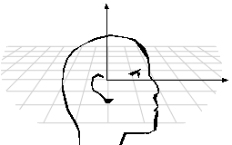

Listener orientation is defined by the relationship between two vectors that share an origin at the center of the listener's head: the top and front vectors. The top vector points straight up through the top of the head, and the front vector points forward through the listener's face at right angles to the top vector, as in the following illustration.

An application can set the listener's orientation by using the IDirectSound8::SetOrientation method.
By default, the front vector is (0.0, 0.0, 1.0), and the top vector is (0.0, 1.0, 0.0). The two vectors must always be at right angles to one another. If necessary, DirectSound will adjust the front vector so that it is at right angles to the top vector.